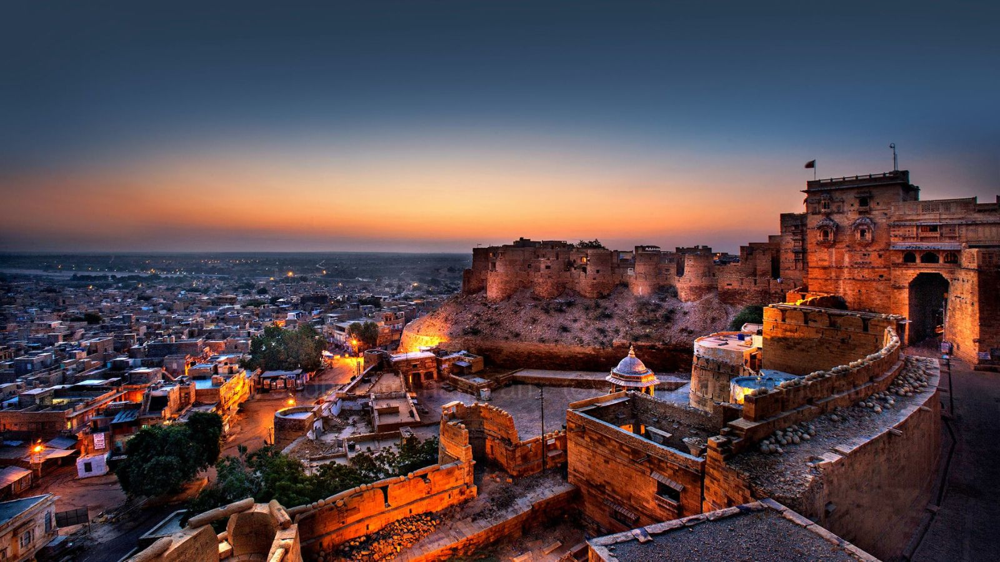
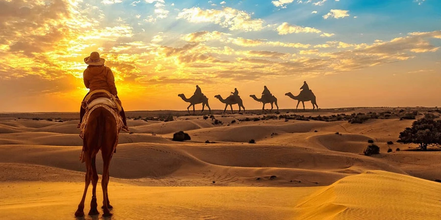

A Journey Through Culture, Nature, and Heritage

Perched on a hilltop, Amer Fort is a UNESCO World Heritage site known for its artistic Hindu-style elements.
with red sandstone and marble, it features the stunning Sheesh Mahal (Mirror Palace) and offers breathtaking views of Maota Lake.

Known as Sonar Quila, this massive yellow sandstone fort rises from the Thar Desert.
It is one of the very few "living forts" in the world, as nearly one-fourth of the old city's population still resides within its walls.

The "Water Palace" is an architectural marvel appearing to float in the center of Man Sagar Lake.
While four of its five stories remain submerged underwater, the top floor showcases beautiful Rajput-style architecture and is a favorite for evening photography.

Located on the banks of Lake Pichola, this grand complex is a fusion of Rajasthani and Mughal styles.
It consists of several palaces, courtyards, and gardens, offering a panoramic view of the "City of Lakes" and the famous Lake Palace.

This fort is famous for having the world's second-longest continuous wall (36km).
Built by Maharana Kumbha, it sits deep within the Aravalli Hills and was the birthplace of the legendary warrior Maharana Pratap.

One of the largest and best-preserved forts in India, Mehrangarh towers 400 feet above the "Blue City" of Jodhpur.
Its thick walls enclose internal palaces like the Moti Mahal and Phool Mahal, famous for their intricate carvings and stained glass.

A quintessential part of the Rajasthan experience, the Sam Sand Dunes offer a spectacular desert landscape.
It is the perfect spot for camel safaris, traditional folk music under the stars, and capturing aesthetic sunset views over the rolling dunes.